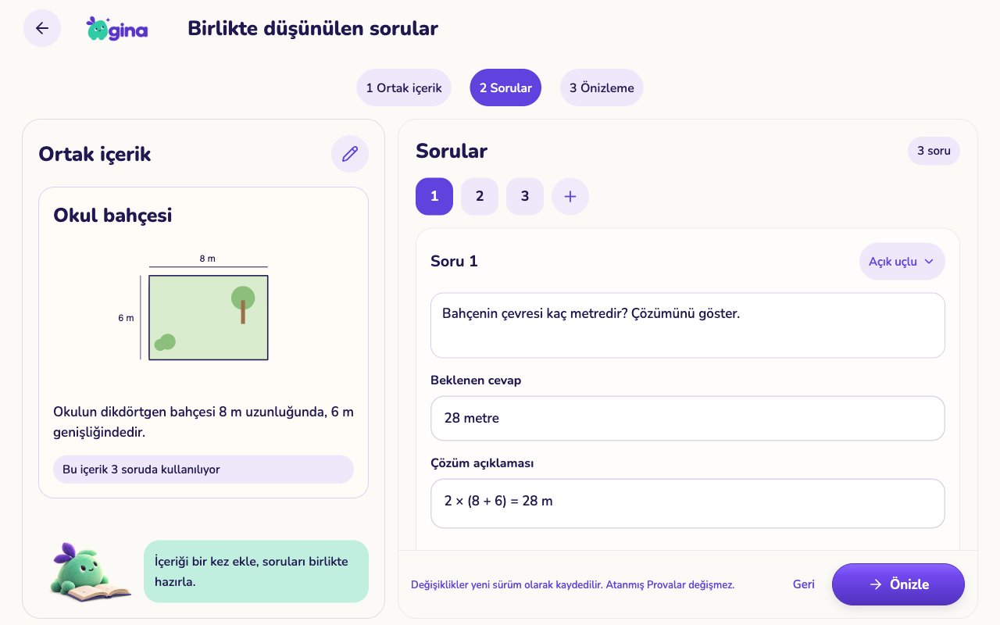
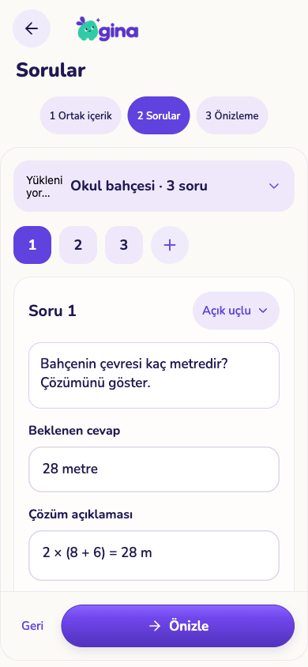

Ortak metin / görselle soru hazırlama
Kullanıcının onayladığı tasarım ve çalışan uygulama. Uygulama görüntüleri sentetik kayıtlarla Expo web üzerinden alınmıştır; fiziksel cihaz görüntüleri değildir.
Onaylı tasarım maketi Uygulama · tablet 1280×800
Uygulama · tablet 1280×800
Uygulama · telefon 390×844
Ortak içerik → Sorular → Önizleme. Düzenlemeler yeni sürüm oluşturur; atanmış Provalar korunur. Fiziksel cihaz kontrolü ve üretim dağıtımı ayrıca yapılacaktır.
Kontroller ve açık sınırlar